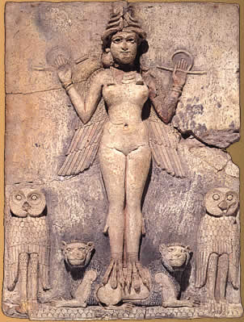

|

La figura de la lamia o súcubo es prácticamente universal. Lilith es uno de esos personajes que tanto juego han dado al imaginario colectivo. Pero habría que diferenciar entre sus raíces, su formación y su consolidación por parte de unos y de otros.
Para empezar analizaremos su origen sumerio en consonancia con las creencias locales.
En aquellos tiempos se pensaba que las almas de los hombres y de las mujeres que morían de forma prematura estaban condenados a acosar al resto de los hombres hasta que se les daba al fin descanso con un ritual apropiado. Este tipo de creencias se mencionan en los hechizos asirios.
El fantasma de la mujer que moría en el parto es otra creencia compartida por varios pueblos. En Arabia se creía que los búhos cuando ululaban por la noche eran en realidad mujeres lastimeras convertidas en pájaros solitarios que buscaban a sus hijos perdidos. Entre los malayos, si una mujer muere en el parto se convierte en un demonio volador, langsuyar, un familiar femenino. Se supone que el langsuyar original era una especie de búho nocturno, como la Lilith de la tradición rabínica. Entre los árabes de Palestina el búho real de los egipcios es una mujer encantada que influye negativamente en los partos siempre que tiene ocasión. En la tradición árabe más antigua Laila toma forma de búho al volar desde la tumba de su amado.
En las Islas Banks en Melanesia si una mujer muere en el parto y su hijo ha sobrevivido, su espíritu no puede marchar a la tierra de los fantasmas. En las Islas Pelew el espíritu de la mujer grita “Dadme al niño”; en la India aparece el mismo fantasma.
Lilitu (demonio femenino, espíritu del viento) y ardat lili (en acadio) eran dos tipos de demonios femeninos. Ardat lili tiene la connotación de mujer casadera y parece haber tenido relaciones con los humanos mucho más cercanas que la lilitu, asumiendo la función de la Lilith hebrea, (equivalente etimológico de lilitu). Este súcubo se convierte en la esposa fantasmal de los hombres por su deseo de encontrar pareja.
Tiene su contraparte masculina en idlu lili. Idlu denota al hombre adulto con su fuerza totalmente desarrollada. El lilu sería la contraparte masculina de lilitu.
Tanto mujeres como hombres estaban expuestos a la posibilidad de unirse con un Jinn y otros poderes invisibles.
La literatura rabínica narra las fechorías de Lilith que trajo al mundo centenares de demonios. Los rabinos creían que un hombre puede tener hijos con un demonio. En Pirke el verdadero padre de Caín no es Adán sino uno de los demonios. En el libro de Enoch se dice que los espíritus malignos son los hijos de las mujeres y de los “santos vigilantes”. Justino Mártir afirma que los demonios son la descendencia de los ángeles que yacieron con las mujeres. En el Enoch Eslavo Satán es el amante de Eva. Y Azazel es conocido como el seductor tanto de hombres como de mujeres.
Las primeras formas de Lilith aparecen en la cultura sumeria en el tercer milenio antes de Cristo. En la lista de un rey escrita en una tablilla del 2400 a.c, se menciona que Gilgamesh es hijo de uno de los lilu. Originariamente los lilu eran demonios de la tormenta y del viento (relacionados a su vez con la fertilidad que traen ambos fenómenos), pero cierta asimilación etimológica por parte de los hebreos hizo que se identificara como demonios de la noche.
De acuerdo con la épica de Gilgamesh, Lilith (Lillake) construyó su casa en medio del Huluppu, un sauce plantado en la ribera del Éufrates en los primeros días de la creación. Un dragón puso su nido en la base del árbol y el pájaro Zu subió a las crías a la copa. Gilgamesh mató al dragón con su hacha de bronce y el pájaro Zu y las crías volaron a la montaña. Lilith afectada por el terror derribó su casa y huyó enfurecida.
El epíteto de Lilith era “la hermosa dama”. En sus primeros pasos fue asimilada a las creencias tradicionales de súcubos y demonios femeninos que matan niños, beben sangre, se acuestan con los hombres y demás tópicos.
Con la asimilación de Lilitu por los hebreos, Lilith adquirió nuevos enfoques y una visión más rica y mucho más profunda. Pero de ello hablaremos en el siguiente artículo.
Fuentes:
-Magia Semítica. Conjuros, rituales y encantamientos. R. Campbell Thompson. Ed. Humanitas
-The Hebrew Goddess. R. Patai. Wayne State University Press. Detroit.
|
 RSS
RSS